In class we recreated Andrew Carnegie's resume in CSS and HTML
Samstagram
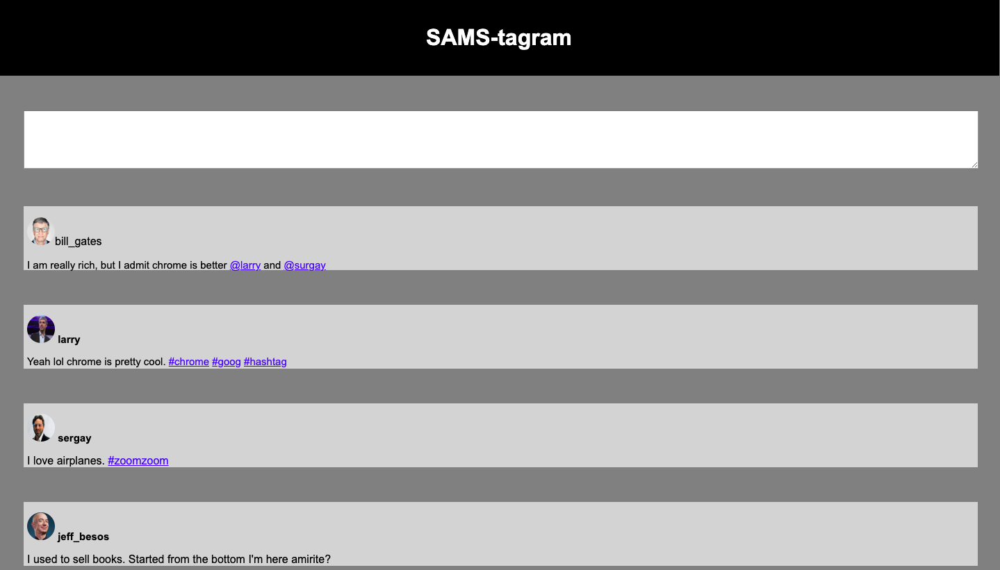
In class we made a instagram look alike with a comment section of famous computer scientists
Typing Game
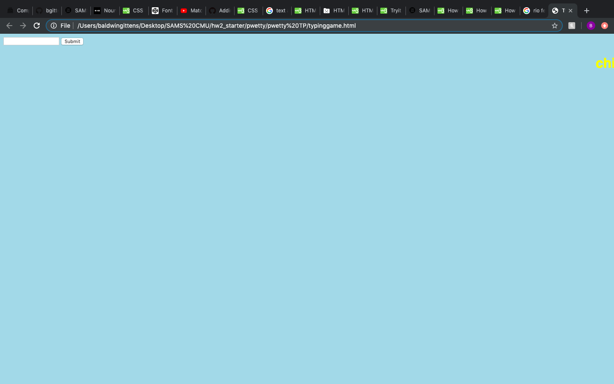
In class we created a typing game with HTML, Javascript, and CSS where words appear and when the user types the word it disappears
Mood Board
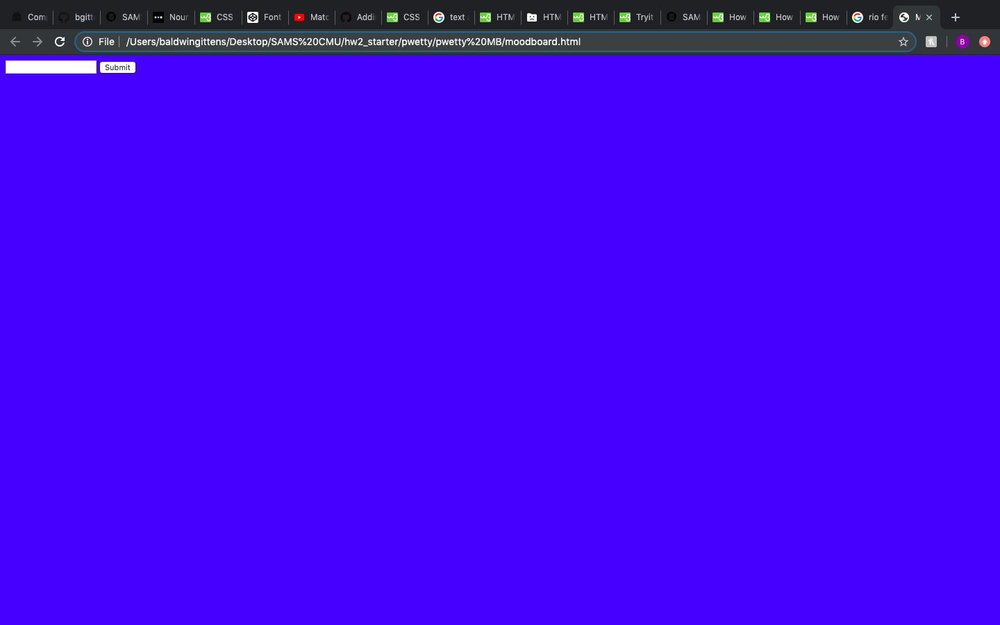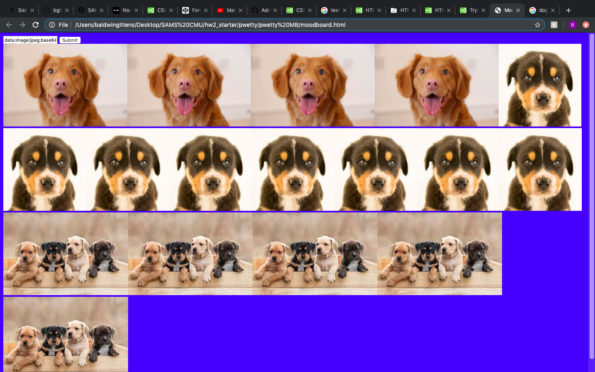
In class we created a site with Javascript, HTML, and CSS where you can post any picture you want with a image url
TODO
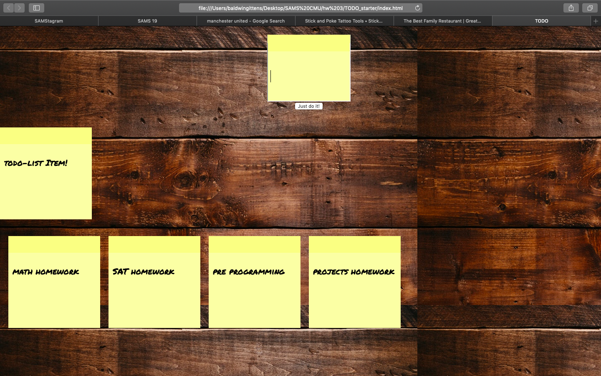
This is a site where you can post your todo list and delete the things you've completed. I created this with HTML, Javascript, and CSS.
Samstagram 2.0
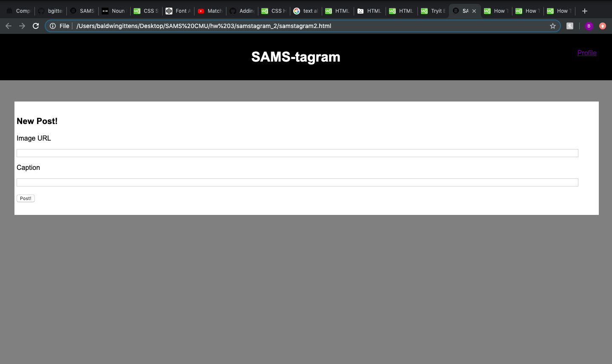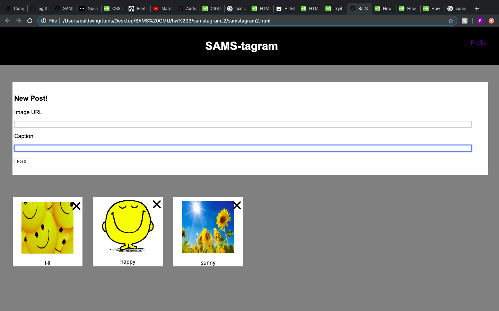
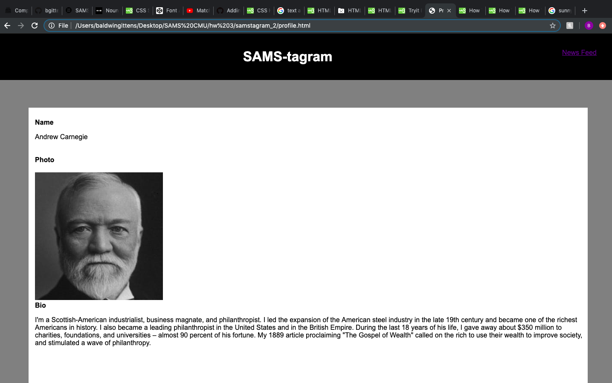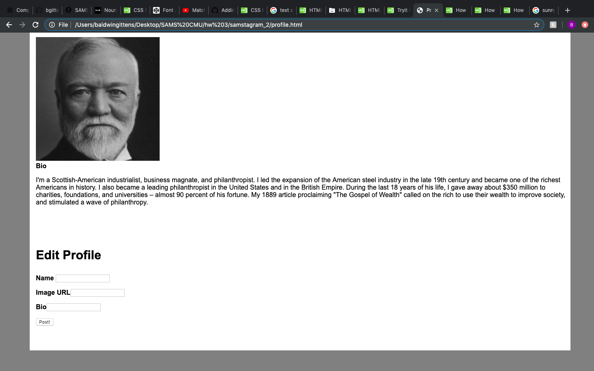
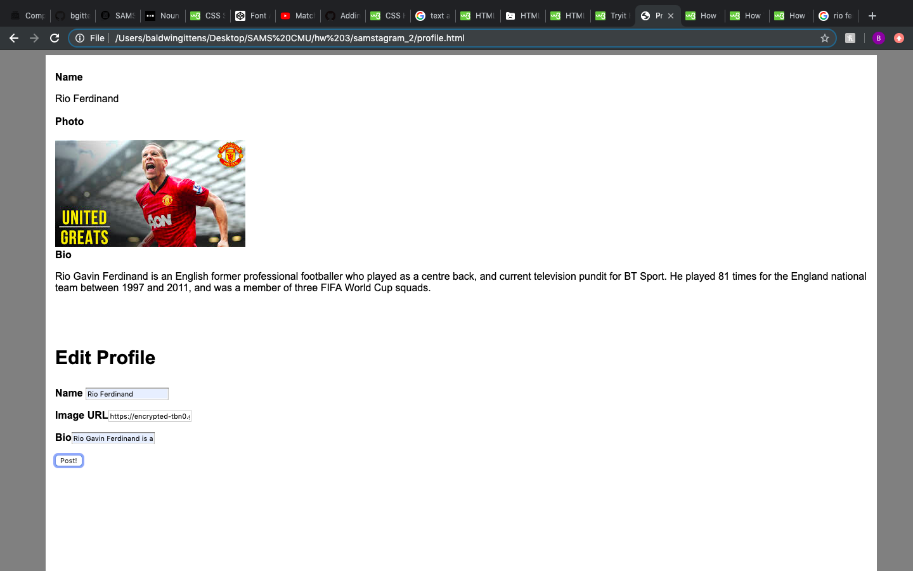
This is the new and improved Samstagram. This was created with HTML, CSS and, Javascript. In this site you can post pictures, delete pictures, and create your own account!
Google
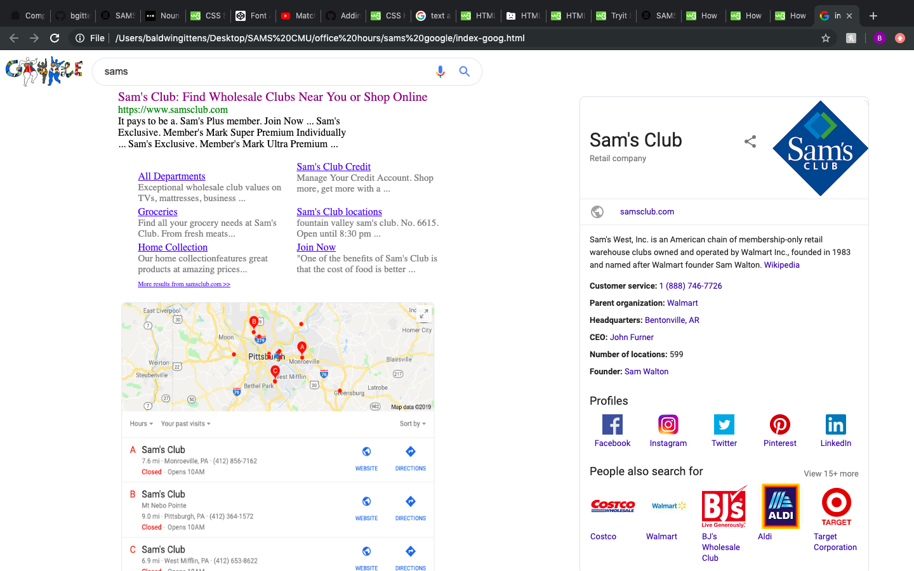
In this site I recreated the Sam's Club search results in Google. It has links that go to sites on the official Sam's Club website and a map of Sam's Club locations near me.